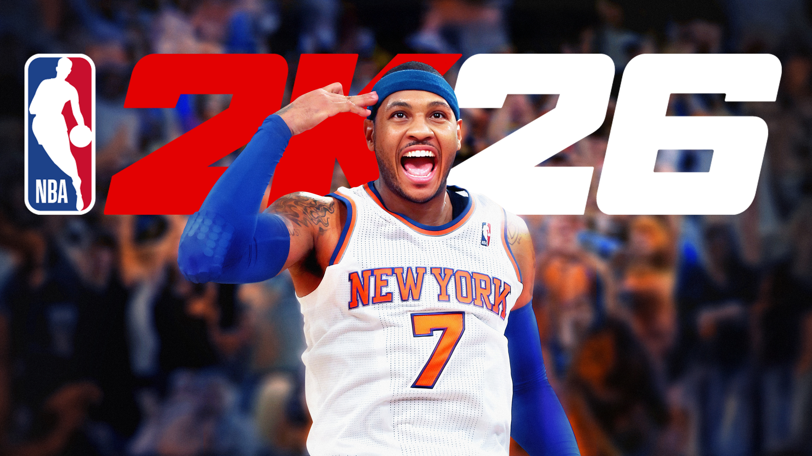
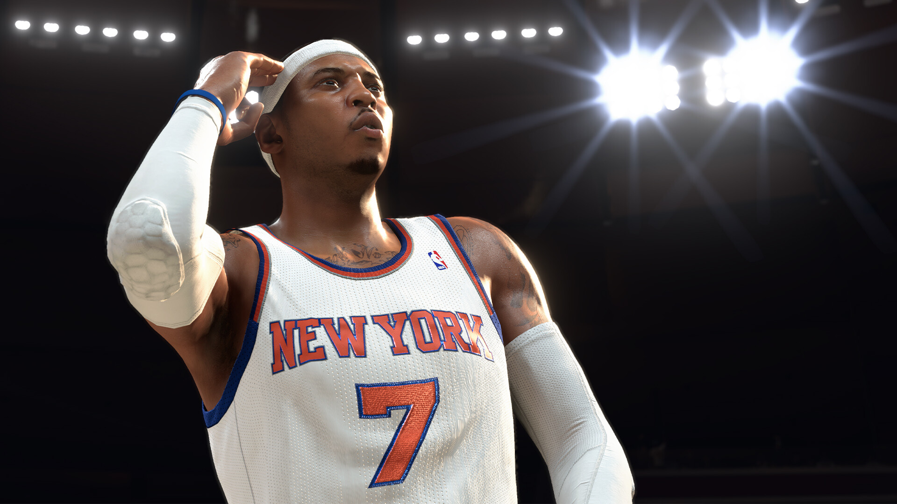
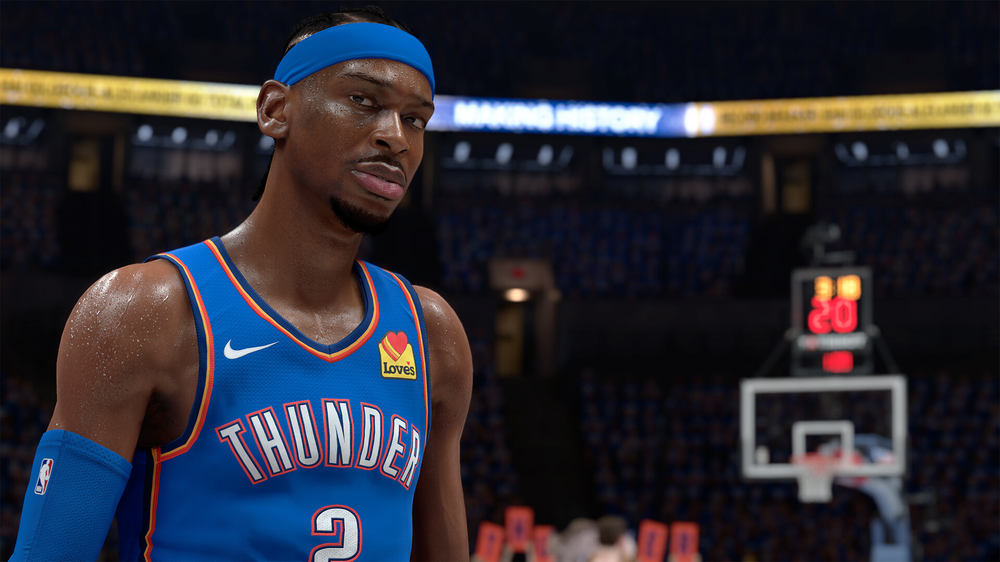
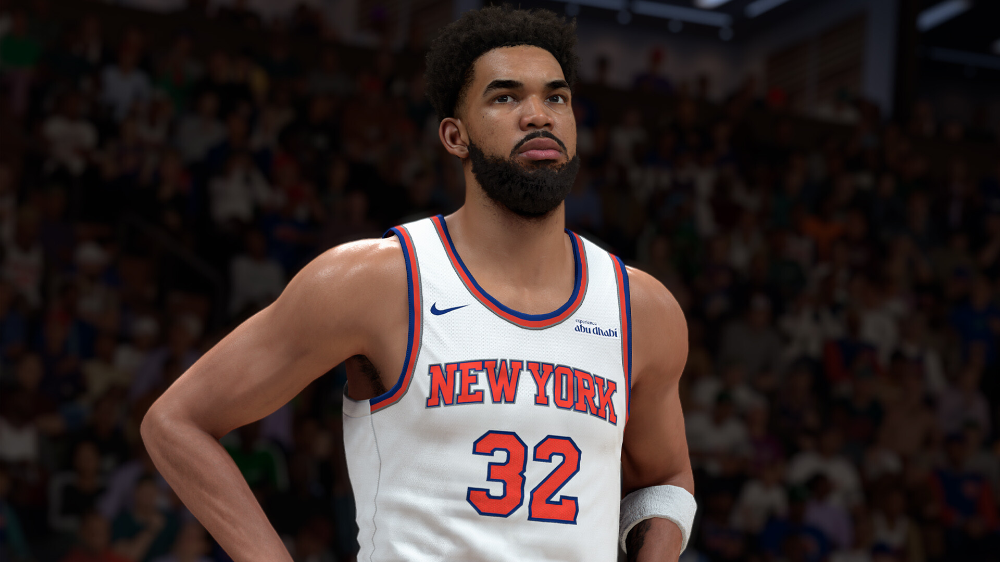
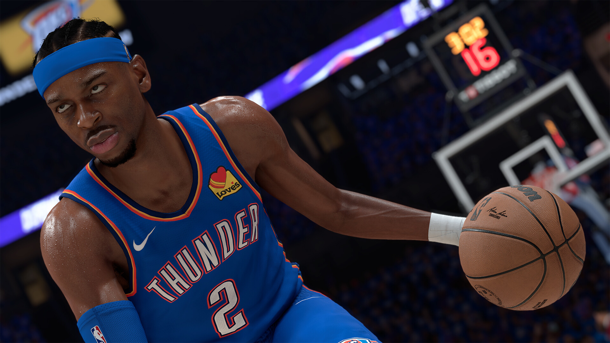
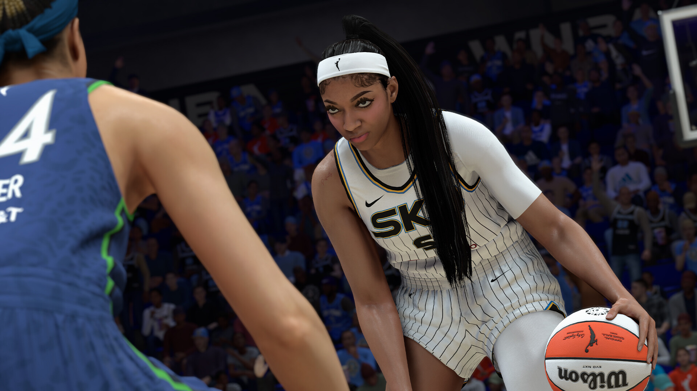

About NBA 2K26
NBA 2K26 is considered one of the most ambitious entries in the long-running basketball simulation franchise, aiming to deliver a more realistic, competitive, and immersive NBA experience for both casual fans and hardcore players. Developed by Visual Concepts and published by 2K Games , the game launched worldwide in September 2025 with major improvements to gameplay fluidity, player movement, and overall realism on both current-generation consoles and PC. One of the biggest focuses in NBA 2K26 is the enhanced ProPLAY technology, which brings more lifelike animations, smoother dribbling, improved foot planting, and more natural player reactions during gameplay, making matches feel closer to real NBA broadcasts than ever before. Shooting mechanics and defensive systems were also heavily reworked, rewarding smarter shot selection, timing, and positioning rather than relying purely on speed or overpowered “meta” moves that dominated previous entries. MyCAREER remains one of the game’s centerpiece modes, offering a deeper story-driven experience combined with expanded customization options, online social spaces, and more freedom in building a player archetype that matches different playstyles. The City continues to evolve with larger environments, live events, brand collaborations, and seasonal rewards that encourage long-term progression, although many players still criticize the heavy emphasis on VC purchases and monetization systems tied to upgrading characters faster. MyTEAM also returns with updated card art, new challenges, special promo events, and competitive online modes that keep the community active throughout the year, while debates about pack odds and pay-to-win mechanics continue to divide players. Gameplay-wise, NBA 2K26 introduces smarter teammate AI, more realistic defensive rotations, better transition offense, and improved physicality in the paint, helping games feel less arcade-like and more strategic compared to earlier releases. Signature animations for superstar players have also been expanded significantly, making athletes like LeBron James, Stephen Curry, and Jayson Tatum feel more authentic through unique dribble packages, shooting motions, and movement styles. Visually, the game pushes realism further with upgraded lighting systems, improved crowd reactions, sweat physics, detailed arenas, and more cinematic presentation during broadcasts, especially on high-end hardware. The community response to NBA 2K26 has been passionate but divided; many players praise the smoother gameplay, improved realism, and more balanced pacing compared to older titles, while others argue that online modes still favor certain overpowered builds and microtransaction-heavy progression systems. Despite ongoing criticism surrounding monetization and competitive balance, NBA 2K26 remains one of the most popular sports games in the world, supported by regular seasonal updates, esports tournaments, and a massive global player base that continues to make the NBA 2K franchise the dominant name in virtual basketball.




| Component | Minimum | Recommended |
|---|---|---|
| OS version | Windows 10 64-bit | Windows 10 64-bit |
| CPU | Intel i5-4670k or AMD Ryzen 3 1200 | Intel i5-8600 or AMD Ryzen 5 3600 |
| Memory | 8 GB | 16 GB |
| GPU | NVIDIA GTX 1060 (6GB) or AMD RX 5500 XT (8GB) or Intel Arc A750 | NVIDIA® GeForce® RTX 2070 8 GB or AMD Radeon™ RX 5700 8 GB or Intel® Arc™ A770 |
| DirectX | DirectX 12 | DirectX 12 |
| Storage | 110 GB | 110 GB |